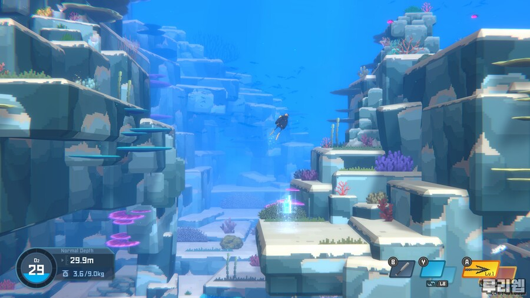

데이브 더 다이버

| 제목 | 데이브 더 다이버 | 출시일 | 2022년 10월 27일 |
| 개발사 | 민트로켓(넥슨) | 장르 | 액션 어드벤처/타이쿤 |
| 기종 | PC / 콘솔(예정) | 등급 | 12세이용가 |
| 언어 | 자막 한국어화 | 작성자 | Mustang |
넥슨의 서브 브랜드 ‘민트로켓’이 지난 10월 27일 스팀에서 얼리
액세스로 선보인 타이틀 ‘데이브 더 다이버’. 해당 타이틀은
2018년 ‘프로젝트 데이브’ 였던 시기에도. 그리고 올해 진행된
미디어 시연에서도 충분히 눈여겨볼 만한 타이틀이 분명했다.
이전의 프로젝트 시기가 해양을 중심으로 진행되는 탐사에만
집중하고 있었다면, 민트로켓 아래에서 강화된 데이브 더
다이버는 게임 구성을 바꾸며 보다 장기적인 게임 플레이와
지향점을 갖게된 것처럼 보인다. 대기업에서 인디 정신으로
만들어진 독특한 타이틀. 데이브 더 다이버는 그렇게 한층 더
탄탄한 구성을 갖게 됐다.
단적으로, 데이브 더 다이버의 게임 플레이를 빛나게 만드는
요소들이 더해졌다. 이전 프로젝트 단계의 결과물에서 새로운
플레이 양상을 더하고. 한정된 자원을 최대한 활용하기 위한
방법론을 고민하며, 동시에 플레이를 풍부하게 만들 수 있는
여러 콘텐츠들을 더하고 있다.
※ 해당 리뷰는 얼리 액세스 버전으로 작성되었으며, 게임 내 콘텐츠 등은 추후 개발 상황에 따라서 달라질 수 있습니다.
● 왜 로그라이크의 문법을 가져왔는가? - 하지만 적용 방법론이 다르다
데이브 더 다이버에서 가장 먼저 살펴봐야 하는 점은
로그라이크의 문법을 일부 차용해 왔다는 점이다. 즉, 매 번
해저로 탐사를 떠날 때마다 일부 다른 상황들이 주어지며,
플레이어는 이에 대응하면서 점차 더 깊은 곳으로 모험을 떠나는
경험을 하게 된다. 덕분에 데이브 더 다이버의 플레이는 일정
범위 내에서는 예측할 수 없는 것이자, 새로운 플레이로
자리하고 있다.
일종의 경향성인 로그라이크의 문법을 차용한 것에는 바로 이와
같은 장점이 있을 것이다. 특히나 ‘적은 콘텐츠로 최대한의
효율을 내는 것’이란 측면에서 큰 의미를 가진다. 당초 로그에서
시도했던 아이디어이자 로그라이크라는 흐름을 만든 몇 가지
요소들 중, ‘절차적 생성’이라는 개념이 불러온 긍정적인
결과이기도 하다.
영구적 죽음이라는 시스템과 맞물린 절차적 생성은 로그와 그
아류작들이 매력적으로 다가가게 만드는 역할로 작동했다. 한
번의 선택과 시도가 중요하게 다뤄지고, 매 번 다른 경험으로
이어지는 플레이를 만들 수 있어서다. 그리고 바로 이 ‘매 번
다른 경험으로 이어지는 플레이’는 데이브 더 다이버에서 다른
방식으로 작동하고 데이브 더 다이버만의 경험을 만들어내는
것에 일조한다.

게임 디자인적 방향성이 일관되어 있다는 의미다
데이브가 차용한 개념들은 로그라이크와 그 연장선에 있는
로그라이트라는 흐름과 맞물려 있다. 영구적인 죽음이라는
요소를 걷어내고, 플레이의 연속으로 쌓아나가는 것을 늘리며,
플레이어들이 오랜 시간을 들이면서도 덜 지루하게 만드는
것으로의 전환이다.
다만, ‘덜 지루하게 만드는 것’에서 접근하는 방법론이 다르다.
이는 전투 중심의 플레이로 구축된 것이 아니라, 탐사 중심으로
디자인된 설계를 보여주고 있기에 그러하다. 이말은 곧,
플레이에 위협이 될 수 있는 시스템적 요소를 줄여나갔던 것을
의미한다.
데이브는 초기 프로젝트 시기부터 디스커버리와의 협업이
진행되었을 정도로 탐사 중심-해양 탐험 및 사진 찍기 등- 의
타이틀로 디자인된 바 있다. 따라서 이를 포기하는 순간부터는
데이브가 아닌 완전히 다른 프로젝트가 될 수밖에 없었다.
극단적으로 말하자면 데이브는 로그와 그 연장선에 있는
작품들이 보여준 결과물에 도달하고자 했지만, ‘전투’라는 가장
강렬하고 효과적인 수단을 사용하기에는 적합하지 않았다.
어디까지나 해양 탐사에 중심을 두고 있기에, 일반적인 전투 형태가 통용되지 않는다
따라서 개발진은 로그가 만들어낸 개념들이 도달했던 최종
목적지, ‘한정된 리소스를 최대한 활용한다는 것’ 그리고 ‘매
플레이를 색다르게 만든다는 것’을 다른 접근법을 통해서
달성하고 있다. 이러한 목적은 게임 플레이 전반에 걸쳐서
점진적으로 이루어지며, 플레이어들이 새로움을 느낄 수 있는
것을 어디에 어떻게 배치하느냐를 통해서 이루어진다.
데이브의 게임 플레이를 생각해보자. 플레이어는 게임 시작 이후
5분 내에 블루홀 내부로 잠수를 시작한다. 가장 처음 주어지는
목적지는 해수면 근처의 어류를 잡는 것이다. 그리고 게임
플레이가 진행되면서 더 깊은 심해로의 모험을 떠난다.
플레이어는 심해로 잠수를 하기 위해서 장비를 업그레이드 하고.
새로운 이벤트를 경험하며 조금씩 할 거리들이 늘어나게 된다.
재화를 누적하는 한편, 각종 이벤트와 메인 퀘스트에 따른
새로운 목적들이 주어지고 여기에 수반해 흥미로운 이벤트들이
분위기를 환기시킨다.
분위기를 환기시키는 미니 게임에 진심이라는 것은 너무도 잘 보인다
이와 같은 전체적인 플레이 흐름 속에서 데이브가 차용한
개념들은 새로운 답을 내놓는 도구가 된다. 게임 플레이 양상이
다르기에. 데이브라는 작품의 컨셉이 같은 범위 내에 자리하고
있지 않기에 선택한 길이다. 그리고 이를 통해서 로그라이크의
연장선에 일정 부분은 자리하고 있되, 그 개념을 벗어나는
결과물을 선보이고 있다.
플레이 전반을 크게 보자면 ‘한정된 맵의 활용’ / ‘이벤트
중심으로 분위기를 환기하는 것’ / ‘계속해서 심해로 이동하도록
유도하는 콘텐츠 디자인’이 데이브의 플레이를 몰입이 가능하고
오랜 시간 플레이를 만들어내는 것으로 승화시킨다.
● 데이브를 데이브로 만드는 것들 - 게임 디자인 측면에서
첫 번째인 한정된 맵의 활용은 데이브에서는 아주 극 소수의
맵을 반복해서 보여주는 것으로 작동한다. 게임 플레이 시작부터
끝까지 플레이어가 만나는 것은 얼리 액세스인 현재 기준으로
4~5개 정도의 유형만이 전부다. 이러한 점에서 비추어보면,
절차적인 생성이라는 표현보다는 몇 개의 맵이 준비되어 있고,
잠수 시에 특정한 맵이 등장한다는 것에 가까워진다.
즉, 플레이어는 오랜 시간 잠수를 하는 과정에서 이전에 봤던
지형과 지물을 그대로 마주한다. 하지만 그럼에도 플레이가
단조롭게 진행되지는 않는다. 아니, 오히려 ‘이 즈음에는 뭐가
있었지?’라는 형태로 지형을 기억하고 원하는 길로 탐사를
이어나가는 기준으로 작동한다. 이는 데이브가 탐험 과정에서
지도를 보여주지 않고 있기 때문이다.
그나마 주요 퀘스트 진행 도중 '방향과 거리'만을 표시해두는 정도
지도를 보여주는 플레이 형태가 아니기에, 플레이어는 큰 무리
없이 이벤트를 수행하고 더 깊은 곳으로 안정적인 탐험을 꾸릴
수 있게 된다. 개발진 또한 이와 같은 점을 고려했을 것으로
보인다. 구역마다 절차적 생성로 지형을 구성하는 방법과
현재처럼 정해진 맵 안에서 무작위로 등장하도록 하는 방법
사이에서의 선택이다.
두 선택 사이에서 개발진은 ‘원활하게 탐사를 할 수 있도록’
만드는 방법을 택했던 것처럼 느껴진다. 데이브의 플레이는
어디까지나 수면에서 심해로 내려가면서 겪는 경험들에 초점을
맞춘다. 매 잠수마다 무작위로 지형이 생성된다면, 플레이어들이
겪을 혼란은 당연히 늘어난다.
그렇기에 지금과 같이 정해진 일부 맵 구성이 무작위로 등장하는
형태가 됐고, 동시에 지도를 보여주지 않으면서 ‘탐사’라는
키워드를 오롯이 살릴 수 있는 형태로 마감이 이루어졌다. 게임
플레이 중반까지는 수면과 심해를 계속해서 왔다 갔다 해야만
하는 플레이기에, 지금과 같은 디자인은 유효하다. 심해까지
이동하며 탐험하는 느낌을 살릴 수 있는 것은 물론이고 플레이를
누적하면서 어디에 무엇이 있는지를 파악하고. 적절한 탐험
루트를 짤 수도 있게 됐다.
맵 수가 한정되어 있으므로, 플레이 과정에서 자연스레 어디 즈음에 상어가 있고 어디 즈음 산소통이 있는지를 파악하게 된다
이러한 의도를 가장 직접적으로 보여주는 것이 야간 잠수다.
주간 잠수와 비슷한 환경을 사용하고 있지만, 등장하는 어류 /
시야의 차이가 있다. 이것 만으로도 플레이어는 같은 환경을
다르게 느낄 수 있고 플레이에서 새로운 지점들을 발견할 수
있게 된다. 여기에 야간에만 만날 수 있는 새로운 이벤트 등으로
또 다른 층위에서 플레이를 풍성하게 만든다.
두 번째 요소인 ‘이벤트 중심으로 환기하는 것’은 지금까지
언급한 정해진 루트를 반복하는 과정에서 다양함을 더하기 위해
사용되고 있다. 한정된 맵의 활용은 원하는 탐험 루트를
플레이어들이 학습하는 데에는 도움을 줄 수 있겠으나, 자칫하면
금세 반복적인 플레이로 이어질 가능성이 있었다. 비슷한 장소를
보는 것은 물론, 심해까지 이어지는 길을 항상 같은 루트로
도달해야 한다는 의미이기 때문이다. 이벤트는 이렇게
필연적으로 발생하는 지루함을 줄여주고 새로운 목적과 루트를
만드는 것에 중점을 두고 있다.
잠수 도중 수행하는 메인 스토리에서는 진행에 따라서 새로운
루트가 생기거나, 새로운 발견물을 만나도록 유도한다. 이
과정에서 플레이어는 이전에 진행했던 루트와 다른 길을
발견하며, 목적지까지 이전과는 다른 접근을 하기 마련이다.
메인 스토리나 일부 서브 스토리는 결국, 새로운 루트를 찾아나가는 과정 위에 있다
더불어 수집 등의 퀘스트나 이벤트에서는 이전에 잘 도달하지
않았던 루트를 탐색하거나, 식재료가 되는 어패류를 이전과 다른
형태로 수렵 / 채집 할 수 있도록 방향을 변화시키고 있다. 예를
들면, 식당에 VIP가 방문하여 여러 재료를 요구하는 형태 / 특정
페스티벌이 발동하여 특정 재료를 집중적으로 모아야하는 것들이
이벤트로 제공되는 것이다.
모든 이벤트들은 이와 같이, 플레이어들이 한정적인 가짓수를
가진 맵을 다른 시점에서 바라보도록 만드는 것에 중점을 둔다.
목적이 되는 재료와 어류를 채집하는 과정에서 새로운 기능들이
더해지며 탐사와는 다른 방향의 콘텐츠가 점진적으로 개방되기도
하고 때로는 처음 보는 장소로 인도되어 길을 헤매는 과정에서
위기를 겪을 수도 있다.
심해에서는 분명 어디선가 본 것 같은데 가고자 하는 방향이 다르게 느껴지기도 한다
이러한 이벤트는 예상하지 못한 장소에서 예상하지 못한 발견을
만들어내기도 한다. 고래 가족의 사진을 찍는다거나. 모래 속에
숨어있던 가오리를 만난다거나. 야간 잠수 등에서 갑작스레
새로운 보스들을 만나는 것들이 예다. 데이브는 이렇듯 여러
이벤트를 통해서 플레이어들이 지루함을 느낄 시기에 새로운
활력을 불어넣고, 다시금 새로운 콘텐츠로 이동시킨다.
세 번째인 ‘심해로 유도하는 콘텐츠’들은 앞선 두 가지 기획을
보완한다. 데이브의 게임 플레이 중 한 축을 가지고 있는
‘초밥집’은 물론이고 메인 스토리 측면에서 목표를 제공하는
방법론이다.
개발진은 점점 더 깊은 곳으로 플레이어들을 이동하게 만들면서,
새로운 환경과 발견들을 제공하는 데에 성공했다. 그리고 이야기
측면에서 새로운 목표를 부여한다. 해저 문명에서 만나는
NPC들의 부탁을 들어주고, 목표를 달성하며 더 깊은 곳으로
모험을 떠나도록 설계되어 있다.

해저 어인족 마을은 또 다른 분위기를 제공하고 추가적인 목표이자 거점이 된다
얼리 액세스 기준으로 후반부인 해저 마을을 선보이는 시기도
아주 적절하다. 플레이어들이 몇 차례 잠수를 하면서 지형을
익혔을 때, 새로운 루트와 지역을 선보이는 방식이다. 그리고
보트에서 바로 해저 마을로 이동할 수 있는 도구도 지급하면서,
수면이 아닌 심해에서 새로운 모험을 시작하게 만든다.
이것 만으로도 플레이의 느낌이 달라지기 마련이다. 블루홀
기저에 자리한 심해에서 수상으로 이동하는 것은 그동안의
경험을 복기하며 또 다른 루트를 찾는 것이 되기 때문이다.
여기에 아직 공개되지 않은 콘텐츠까지 준비 중이다. 얼리
액세스에서는 심해 호수 도달 전에 메인 스토리가 마무리되지만,
이 또한 더 깊은 곳으로 플레이를 이끌어나가게 된다. 더 깊은
곳으로 이동하는 것이 모험의 연장선에 자리하도록 설계해두고
새로운 발견과 수익을 얻을 수 있도록 설계를 해둔 모습이다.
심해로 그리고 더 깊은 곳으로. 어디까지나 이것이 데이브의 주요 지향점이다
심해로 들어갈수록 나머지 축 중 하나인 초밥집의 수익도
고도화된다. 심해에 사는 생물일수록 재료로 사용했을 때 더
높은 가격을 받을 수 있게 만들어 뒀다. 따라서 플레이어는 게임
플레이 시간이 누적될수록 심해에서 채집과 수렵을 하는
방향으로 자연스레 움직이게 된다. 더 높은 수익은 다시금
업그레이드 등에 사용되며, 보다 깊은 장소로. 새로운 모험과
발견으로 플레이어를 이끈다.
이와 같이 개발진이 구축한 모든 안배는 아주 적절하게 잘
맞물려 작동한다. 자연스레 심해로 이동하도록 짜여진 흐름과
심해에서 보다 높은 수익을 얻을 수 있는 구조. 그리고 그
과정을 채우는 다채로운 이벤트와 여러 상황들이 데이브의
플레이를 한층 더 각별한 것으로 만드는 셈이다.
고래가 나오거나. 사진을 찍거나. 이벤트들은 정적이지만 감동을 주기도 한다
● 색이 다른 콘텐츠, 타이쿤과의 접합 - 잘못 만들면 망가지는데, 그걸 또 해냈습니다?
심해로의 탐험과 모험이 가장 중심에 자리하는 콘텐츠라면,
초밥집 운영은 모험과는 다른 색깔로 플레이의 양상을
바꿔놓는다. 사실 생각해보면, 어드벤처와 타이쿤 두 개를
제대로 접목시키는 것은 힘든 일이다. 그동안 로그라이크의
문법을 따른 던전 탐험형 플레이와 경영 시뮬레이션 플레이의
접목을 한 타이틀들이 몇 개 있었지만, 그 중에서 눈여겨볼 만한
족적을 남긴 타이틀은 한 두개를 제외하고는 없다.
이유는 분명하다. 플레이어가 모험 과정에서 거둬들이는 수익을
타이쿤의 문법과 제대로 맞물리도록 구성하지 못했기 때문이다.
경영 시뮬레이션이라는 굵직한 기둥을 다른 플레이가 제대로
지원하지 않았고, 결과적으로는 이도저도 아닌 위치에서 플레이
경험이 만들어지기 마련이었다.
데이브는 이 부분에서 몇 가지 주목할 만한 변화를 보여주고,
탐험 측면에서의 디자인이 타이쿤에도 고스란히 적용된다. 즉,
반복적인 플레이가 이어지는 플레이를 어떻게 다채롭게 만들
것인가에 대한 해답이기도 하다. 이야기를 진행하면서 초밥집을
경영하는 플레이는 일부 번거로운 요소를 자동화하고. 한편으로
새로이 관리할 수 있는 영역을 만들어낸다.
시간이 가기 전에 서빙하고 음료 따르고 모자란 와사비 갈고. 타이쿤은 플레이가 크게 변하지 않는다
초밥집은 극초반에는 주인공인 데이브가 직접 서빙을 하는
형태로 진행된다. 낮에는 물고기를 잡아 재료를 확보하는 한편,
저녁에는 초밥집을 운영하며 차를 따르고. 만든 음식을 나르는
모든 과정을 총괄한다. 이 과정에서 자금이 쌓이는 것은 즐겁게
받아들여질 수 있으나, 금세 플레이는 반복의 연속이 되기
마련이다. 모험에서 심해로 들어가며 새로운 고가의 재료를
입수하더라도 기본적인 플레이는 변하지 않는다.
하지만 모험 측면과 마찬가지로, 퀘스트를 통해서 타이쿤의
양상이 변화하기 시작한다. 모험에서 메인 퀘스트가
플레이어들의 점진적인 모험을 이끌고 있다면, 타이쿤에서는
VIP들의 방문이 플레이를 심화시키는 역할을 담당하고 있다.
VIP들이 내주는 퀘스트는 탐험 측면으로 플레이를 유도하는
한편, 결과물로 타이쿤 일부 기능의 자동화를 지원한다.
종업원을 뽑아서 서빙 일부를 지원하거나. 차가 아닌 맥주와
같이 돈을 더 벌 수 있는 기능을 지원하는 등이 예다. 여기에
다른 NPC들의 퀘스트가 더해지면, 초밥집은 적정한 한도
내에서는 거의 자동으로 돌아가는 수준이 된다.
초밥집 자동화의 시작은 직원을 모집하고 강화하는 것부터
필연적으로 반복될 수밖에 없는 플레이를 한 번의 퀘스트로
부담감을 줄이는 한편, 덜어낸 부담감은 다른 콘텐츠의 관리로
치환한다. 직접 조작하고 무언가를 만드는 플레이가 아니라,
본격적으로 경영과 같은 형태로 바뀌는 것이다.
양식장이 생기며 생기며 재료를 안정적으로 수급할 수 있다거나.
농장이 생기며 새로운 요리법과 수익을 창출하는 것으로 자리가
옮겨간다. 이는 새로운 기능과 콘텐츠를 제공하면서 플레이의
폭을 넓혀나가는 탐험 측면의 디자인 의도와 맞물리는 측면도
있다. 심해로 다가갈수록 플레이어가 시달리는 무게 제한은 곧,
재료의 안정적인 수급을 방해하는 측면이 있기 때문이다.
게다가 아직까지 큰 위협은 없지만, 더 깊이 내려갈수록 한 번의
사망이 더 큰 리스크가 되기도 한다. 양식장이나 농장은 이러한
리스크를 줄임과 동시에, 플레이어가 탐험을 비롯한 다른
콘텐츠로 눈길을 돌리게 만드는 것에 일조하는 것처럼 보인다.
타이쿤 측면에서 재료 수급 등에 큰 신경을 쓰지 않게 되면서,
위험이 큰 장소에서의 플레이를 강조하는 방식이다.
초밥집 자동화 시점과 심해 진입이 대략 비슷한 시점인 것을 생각하면, 자동화 플레이는 분명 의도된 것처럼 느껴지기도 한다
탐험과 타이쿤. 양 측면에서 모두 플레이를 지속하면서 콘텐츠의
양 자체가 늘어나게 되는데, 플레이어들이 스트레스를 최대한 덜
받는 방향으로 확장이 이루어진다는 것도 주목할 만한
부분이기도 하다. 이를 통해서 데이브는 할머니가 주신
고봉밥처럼 무지막지하게 할 것들이 산재한 타이틀로 자리매김
한다.
모험으로 더 깊은 심해로 들어가는 것에 집중하는 한편,
타이쿤은 자동화를 통해서 탐험과 연결되고 다소 번거로울 수
있는 측면이 배제됐다. 그리고 최종적으로 모험에 필요한 재화를
수급하는 데 도움을 준다. 이 모든 요소가 서로가 서로에게
관련성을 가지고 있고 플레이에 목적성과 발전을 이룩하는 데에
기여하고 있다.

제대로 운영하면 물고기를 잡지 않아도 될 것 같은 양식장
● 스튜디오42의 혼은 살아있다 - 민트로켓의 첫 걸음을 응원하며
2017년 스튜디오42가 선보였던 이블 팩토리. 그리고 넥슨이
선보였던 ‘애프터 디 엔드’. -더 넓게 보자면 2016년 뱀파이어
공주 마리카도 포함해서- 당시 두 타이틀을 플레이하며 남겼던
바람이 하나 있었다. 그 당시, ‘지금과 같은 시도들이 계속해서
이루어지기를. 그리고 앞으로도 이러한 방향이 확장되기를’하고
말이다. 당시 넥슨 내부에서 긍정적으로 볼 수 있는 시도들이
나오는 추세이기도 했고 개별적으로도 충분히 즐거이 플레이할
만한 타이틀어서다.
하지만 이러한 시도는 지난 몇 년간 크게 빛을 보지는 못했다.
넥슨 내부에서의 내홍이 있기도 했었고 그 과정에서 네오플
내부에 있던 스튜디오42는 몇 년 동안 구체적인 결과물을
내놓지는 못했었다. 하지만 이제는 다르다. 넥슨은 서브
브랜드인 ‘민트로켓’을 설립하고 내부에서 이루어진 새로운
시도들을 시장에 내놓고 있다.
현실의 환경단체 문제들을 엿볼 수 있는 이벤트 등을 보면, 이 또한 쉽지 않은 결정이었으리라
‘데이브 더 다이버’는 그 첫 번째 타자다. 이블팩토리를
개발했던 황재호 디렉터의 손에서. 서브 브랜드 민트로켓의 이름
아래, 프로젝트 데이브는 재탄생됐다. 탐험 위주의 디자인에
타이쿤의 문법을 더하는 한편, 모든 디자인들이 심해 탐험과
거기서 수반되는 경험으로 향하고 있다.
아직 얼리 액세스 단계이고 전체 플레이 시간이 긴 편이
아니지만, 그 구성과 지향점은 충분히 고평가할 수 있는
타이틀이기도 하다. 본질적으로 게임을 즐겁게 만드는 것은
무엇인가. 어떻게 설계를 해야만 몰입감을 꾸준히 가져갈 수
있는가. 아직 완성되지 않았음에도 거의 모든 부분이 일관된
지점을 향하고 이러한 것들이 플레이어들이 즐거움을 느끼도록
만든다. 스팀으로의 얼리 액세스 발매 이후 현재까지 압도적
긍정적이라는 평가가 나오는 것 만으로도 그 가치는 짐작하고도
남을 것이라 생각한다.
취향에 맞지 않은 이상, 납득할 만하고 즐길 수 있는 플레이를 보여준다는 것을 부정할 수 없다
그렇기에 더욱 반갑고. 즐겁게 플레이하고. 기대감을 갖게 한다.
변할 수 있고 변할 것이라는 긍정적인 예측도 남길 수 있을
정도다. 이제 첫 걸음을 뗀 넥슨의 서브 브랜드 민트로켓.
그리고 이블팩토리부터 준수한 게임 디자인과 플레이 경험을
선사한 황재호 디렉터 및 데이브 더 다이버의 모든 개발진이
보낸 고민의 시기와 시도들에 응원의 말을 보내고 싶다.
전반적인 게임 디자인과 비주얼적인 측면. 그리고 풍부한 콘텐츠
볼륨과 우리를 웃음짓게 만드는 소소한 콘텐츠와 연출, M.O.E를
비롯한 온갖 패러디까지. 데이브 더 다이버가 보여준 일면은
얼리 액세스 시점에서도 충분히 기대감을 갖게 한다. 부디
일관된 개발 방향성과 더 심화된 콘텐츠로 정식 출시와 함께 PC
및 콘솔에서 만날 수 있기를 바랄 따름이다.